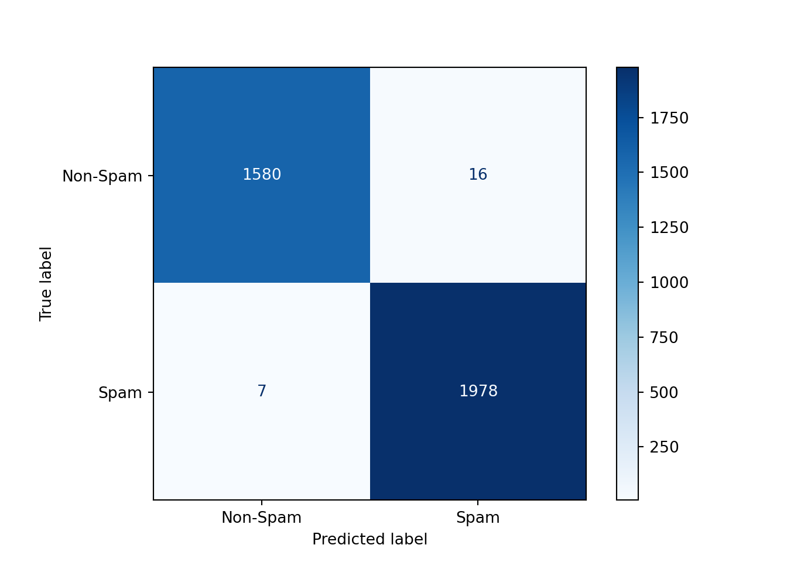

This section builds, tunes, and compare three models to detect spam emails using bag-of-words representations and hour the email is sent: Naive Bayes, Logistic Regression, Multi-Layer Perceptron (Neural Network)
We use will GridSearchCV to perform 5-fold
cross-validation on hyper parameters, and evaluate the best models on
our validation set.
We build a vocabulary from all tokens and define a function to convert emails to a bag-of-words representation.
all_words = [word for tokens in df['body tokens'] for word in tokens]
word_counts = Counter(all_words)
top_words = [word for word, _ in word_counts.most_common(6000)]
vocab = set(top_words)
print("Vocabulary Size:", len(vocab))## Vocabulary Size: 6000texts = df['body tokens'].apply(lambda tokens: ' '.join(tokens)).tolist()
labels = df['label'].to_numpy()
# Shuffle before splitting
combined = list(zip(texts, labels))
random.shuffle(combined)
texts, labels = zip(*combined)
# Transform text into BoW matrix
count_vectorizer = CountVectorizer(vocabulary=vocab, binary=True)
X_bow = count_vectorizer.transform(texts).toarray()
t = np.array(labels)
# Add time sent as another feature value
hours = np.array(df['hour']).reshape(-1, 1)
scaler = StandardScaler()
hours_normalized = scaler.fit_transform(hours)
X = np.hstack((X_bow, hours_normalized))
# Train/test split
X_train, t_train = X[:44000], t[:44000]
X_test, t_test = X[44000:], t[44000:]We set up GridSearchCV for Naive Bayes, Logistic
Regression, and MLP classifiers to examine various key
hyper-parameters.
# Naive Bayes
param_grid_nb = {
'alpha': [0.0, 0.1, 0.5, 1.0, 2.0]
}
bnb = BernoulliNB()
grid_search_nb = GridSearchCV(estimator=bnb, param_grid=param_grid_nb, cv=5)
# Logistic Regression
param_grid_lg = {
"C": [0.01, 0.1, 1, 10]
}
log_reg = LogisticRegression(random_state=42, max_iter = 500)
grid_search_lg = GridSearchCV(estimator=log_reg, param_grid=param_grid_lg, cv=5)
# MLP
param_grid_mlp = {
"hidden_layer_sizes": [(50,50), (100,), (128, 64, 32, 16), (200, 100, 50)],
}
mlp = MLPClassifier(random_state=42)
# Set up GridSearchCV
grid_search_mlp = GridSearchCV(estimator=mlp, param_grid=param_grid_mlp, cv=5)We now train each model using the training set and select the best model based on cross-validation accuracy.
# Run search on training data
grid_search_nb.fit(X_train, t_train)GridSearchCV(cv=5, estimator=BernoulliNB(),
param_grid={'alpha': [0.0, 0.1, 0.5, 1.0, 2.0]})In a Jupyter environment, please rerun this cell to show the HTML representation or trust the notebook. GridSearchCV(cv=5, estimator=BernoulliNB(),
param_grid={'alpha': [0.0, 0.1, 0.5, 1.0, 2.0]})BernoulliNB(alpha=0.1)
BernoulliNB(alpha=0.1)
# Results
print("Best Parameters:", grid_search_nb.best_params_)## Best Parameters: {'alpha': 0.1}print("Best CV Accuracy:", grid_search_nb.best_score_)## Best CV Accuracy: 0.9492727272727273
best_nb = grid_search_nb.best_estimator_# Run the search on training data
grid_search_lg.fit(X_train, t_train)GridSearchCV(cv=5, estimator=LogisticRegression(max_iter=500, random_state=42),
param_grid={'C': [0.01, 0.1, 1, 10]})In a Jupyter environment, please rerun this cell to show the HTML representation or trust the notebook. GridSearchCV(cv=5, estimator=LogisticRegression(max_iter=500, random_state=42),
param_grid={'C': [0.01, 0.1, 1, 10]})LogisticRegression(C=10, max_iter=500, random_state=42)
LogisticRegression(C=10, max_iter=500, random_state=42)
# Best parameters and score
print("Best Parameters:", grid_search_lg.best_params_)## Best Parameters: {'C': 10}print("Best CV Accuracy:", grid_search_lg.best_score_)## Best CV Accuracy: 0.9923181818181819
best_lg = grid_search_lg.best_estimator_# Run grid search on training data
grid_search_mlp.fit(X_train, t_train)GridSearchCV(cv=5, estimator=MLPClassifier(random_state=42),
param_grid={'hidden_layer_sizes': [(50, 50), (100,),
(128, 64, 32, 16),
(200, 100, 50)]})In a Jupyter environment, please rerun this cell to show the HTML representation or trust the notebook. GridSearchCV(cv=5, estimator=MLPClassifier(random_state=42),
param_grid={'hidden_layer_sizes': [(50, 50), (100,),
(128, 64, 32, 16),
(200, 100, 50)]})MLPClassifier(hidden_layer_sizes=(200, 100, 50), random_state=42)
MLPClassifier(hidden_layer_sizes=(200, 100, 50), random_state=42)
# Results
print("Best MLP Parameters:", grid_search_mlp.best_params_)## Best MLP Parameters: {'hidden_layer_sizes': (200, 100, 50)}print("Best MLP CV Accuracy:", grid_search_mlp.best_score_)## Best MLP CV Accuracy: 0.9942499999999999
best_mlp = grid_search_mlp.best_estimator_Now we evaluate the classification performance of each model on the test set using accuracy and confusion matrices, which show counts of true vs predicted labels.
# Predict labels on test set
y_pred_nb = best_nb.predict(X_test)
test_acc_nb = best_nb.score(X_test, t_test)
print(f"Test Set Accuracy: {test_acc_nb:.4f}")## Test Set Accuracy: 0.9419# Generate and plot confusion matrix
cm_nb = confusion_matrix(t_test, y_pred_nb)
disp_nb = ConfusionMatrixDisplay(confusion_matrix=cm_nb, display_labels=["Non-Spam", "Spam"])
disp_nb.plot(cmap="Blues")## <sklearn.metrics._plot.confusion_matrix.ConfusionMatrixDisplay object at 0x000001F4051DA3D0># Calculate FP and FN rates
TN, FP, FN, TP = cm_nb.ravel()
fp_rate = FP / (FP + TN)
fn_rate = FN / (FN + TP)
print(f"False Positive Rate (Non-Spam incorrectly predicted as Spam): {fp_rate:.4f}")## False Positive Rate (Non-Spam incorrectly predicted as Spam): 0.0746print(f"False Negative Rate (Spam incorrectly predicted as Non-Spam): {fn_rate:.4f}")## False Negative Rate (Spam incorrectly predicted as Non-Spam): 0.0448# Predict labels on test set
y_pred_lg = best_lg.predict(X_test)
test_acc_lg = best_lg.score(X_test, t_test)
print(f"Test Set Accuracy: {test_acc_lg:.4f}")## Test Set Accuracy: 0.9936# Generate and plot confusion matrix
cm_lg = confusion_matrix(t_test, y_pred_lg)
disp_lg = ConfusionMatrixDisplay(confusion_matrix=cm_lg, display_labels=["Non-Spam", "Spam"])
disp_lg.plot(cmap="Blues")## <sklearn.metrics._plot.confusion_matrix.ConfusionMatrixDisplay object at 0x000001F4051DE890># Calculate FP and FN rates
TN, FP, FN, TP = cm_lg.ravel()
fp_rate = FP / (FP + TN)
fn_rate = FN / (FN + TP)
print(f"False Positive Rate (Non-Spam incorrectly predicted as Spam): {fp_rate:.4f}")## False Positive Rate (Non-Spam incorrectly predicted as Spam): 0.0100print(f"False Negative Rate (Spam incorrectly predicted as Non-Spam): {fn_rate:.4f}")## False Negative Rate (Spam incorrectly predicted as Non-Spam): 0.0035
# Predict labels on test set
y_pred_mlp = best_mlp.predict(X_test)
test_acc_mlp = best_mlp.score(X_test, t_test)
print(f"Test Set Accuracy: {test_acc_mlp:.4f}")## Test Set Accuracy: 0.9944# Generate and plot confusion matrix
cm_mlp = confusion_matrix(t_test, y_pred_mlp)
disp_mlp = ConfusionMatrixDisplay(confusion_matrix=cm_mlp, display_labels=["Non-Spam", "Spam"])
disp_mlp.plot(cmap="Blues")## <sklearn.metrics._plot.confusion_matrix.ConfusionMatrixDisplay object at 0x000001F403BD1B90># Calculate FP and FN rates
TN, FP, FN, TP = cm_mlp.ravel()
fp_rate = FP / (FP + TN)
fn_rate = FN / (FN + TP)
print(f"False Positive Rate (Non-Spam incorrectly predicted as Spam): {fp_rate:.4f}")## False Positive Rate (Non-Spam incorrectly predicted as Spam): 0.0081print(f"False Negative Rate (Spam incorrectly predicted as Non-Spam): {fn_rate:.4f}")## False Negative Rate (Spam incorrectly predicted as Non-Spam): 0.0035Based on the final results, the multi-layer perceptions with 200 units in the first layer, 100 in the second, and 50 in the third, as they have the highest accuracy test of 99.44% and lowest false positive rate of 0.81%, and will be used for prediction examples. Unfortunately, due to the complexity of neural networks, it is difficult to determine which words are more likely to predict spam or not spam; however, the second-best model, logistic regression, will be used, due to it’s simple interpretation.